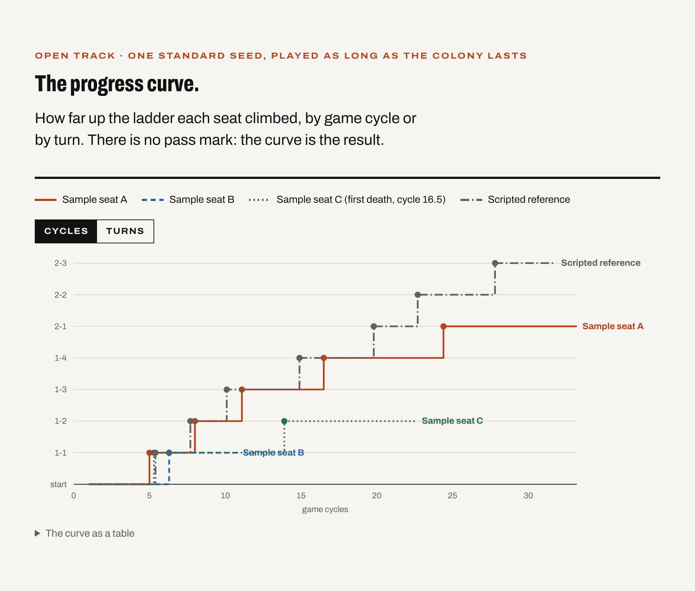
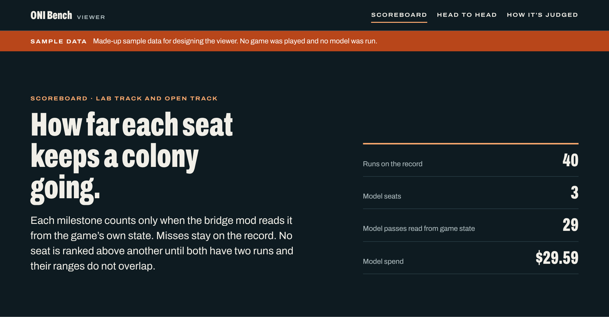
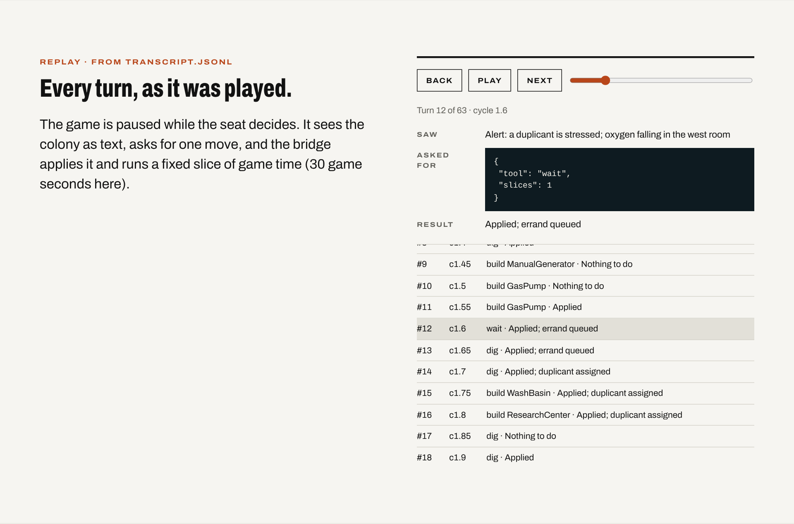
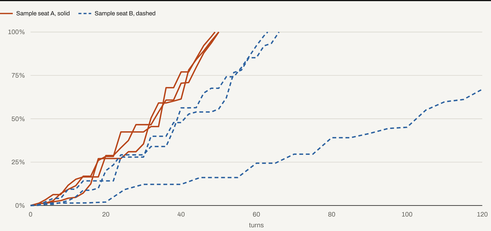

The progress curve how far up the ladder, by cycle, turn or cost


Work ONI Bench
ONI Bench · AI colony survivalONI Bench asks whether an AI can run a colony in the game Oxygen Not Included, where a few small colonists have to be kept breathing, fed and sane underground. The AI plays one move at a time and the running game is the judge. It is the sibling of SaveBench, which asks the same of a factory.
The game keeps time in cycles, one in-game day each. The test is a ladder of milestones, from a working toilet to a closed oxygen loop. A milestone counts only when a small program inside the game reads it from the game's own state. What the AI says it did counts for nothing.
Interface study · the run viewer with made-up data; no game run recorded yet · see the record

The plan, the in-game program and the viewer exist. The first test on real hardware has not run, so there are no results to show.
A small program inside the game pauses it, applies the AI's move, runs a fixed slice of game time and reads the colony back. A milestone counts only when that reading shows it.
The game waits while the AI decides, so a slow model is not punished for thinking. It sees the colony as text and asks for one move.
A run that falls short is kept and shown. A run stopped by the test's own machinery is marked Not run and repeated, never counted against the model.
No sandbox, no debug mode, no instant building. A script that plays from a fixed list of moves is the reference run, never counted as an AI.
Each rung tests one thing a player has to learn. These are the planned first two tiers; the exact pass rules will be checked against the game's own data files before any scored run.
| Milestone | Passes when the game shows | Tests | Result |
|---|---|---|---|
| 1-1 Toilet and wash | An outhouse and a wash basin built and used | Building basics | Not run |
| 1-2 First research | A research station powered by a hand-cranked generator, one technology done | Power, research | Not run |
| 1-3 Fed colony | Every colonist fed for 5 straight cycles from a farm the AI built | Food | Not run |
| 1-4 Breathable base | Oxygen production keeps living space breathable for 5 cycles | Air | Not run |
| 2-1 Oxygen loop | Oxygen made from water, with the leftover hydrogen burned for power | A closed loop | Not run |
| 2-2 Water recycling | Dirty water cleaned and reused for 10 cycles | Liquids | Not run |
| 2-3 Stable temperature | The base held inside a set temperature band for 10 cycles | Heat | Not run |
Beside the ladder, and never blended into it: cycles survived before the first colonist dies, colony health every few cycles (breathable space, stress, food stored, power), and the cost of each milestone in dollars.
The viewer was built first, on invented runs, so the real ones arrive in a form that is already readable. Every screen below shows made-up data and says so across its top.



I decide what each project is for and check what comes back. ONI Bench carries over what SaveBench taught: the game judges, failed runs stay on the record, and no model is ranked on one run. I approved the plan, which judges by the live game's state rather than by edited save files.
AI tools write the code: the program inside the game, the turn driver, the tests and this viewer. AI tools also did the background research, with sources cited in the project's records.
An independent hobby project, not affiliated with or endorsed by Klei Entertainment. Oxygen Not Included and its artwork belong to their owners. This page shows no game artwork.